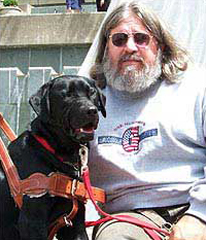

About Us
Prison Pet Partnership gives inmates the opportunity to learn valuable pet care vocational skills to use in finding employment when they resume their lives outside of prison. In addition to training, boarding, and grooming dogs, inmates also gain clerical skills by working in our office. To ensure that they receive ample experience in the pet care industry, inmate employees are required to spend a minimum of two years with us.
All of the animals in the program are from animal rescue organizations, allowing them to lead lives of service rather than be destroyed. Our service dogs are able to respond to the needs of individuals who experience seizures, those who live with various illnesses such as Multiple Sclerosis, and those who have multiple disabilities by assisting them in their daily activities and giving them increased independence. According to Assistance Dogs International, the cost of providing high quality training for Service/Seizure Response/Therapy Dogs is approximately $10,000 per animal. It takes approximately eight months to train these dogs, and only one out of every 15 to 20 dogs selected for our program has the intelligence and temperament necessary to become a service or therapy dog. Dogs who do not make it as service dogs are trained in basic obedience, which allows them to be placed in the community as Paroled Pets. Please view our adoptable Paroled Pets at Petfinder.com.
Although part of the agency’s funding support is derived through a contract with the Department of Corrections, the program is primarily supported by foundations, animal welfare organizations, and by individual donors. Our boarding and grooming service for the local community also provides the program with sustaining funding support.
An active policy making volunteer Board of Directors monitors our programmatic progress in cooperation with the program staff. Approximately 30 volunteers currently assist us by taking the dogs out into the community for important socialization training prior to placement with their recipients. This training includes such things as learning to accompany their recipients into elevators, restaurants, doctor’s offices, grocery stores, and other public facilities.
Studies on the human-animal bond have reached the not surprising conclusion that humans benefit from the unqualified love and acceptance that only animals can provide. Animals need to be loved in return. The shared bond between our dogs, their trainers, and above all, their eventual owners, provides a feeling of satisfaction that directly contributes to the mental and physical wellness of all who are involved.
This is the essence of what Prison Pet Partnership has provided over the years to the inmates who work with the dogs, the dogs who are given the chance to lead lives of service, and the individuals with disabilities who receive the well trained dogs to help increase their level of independence.